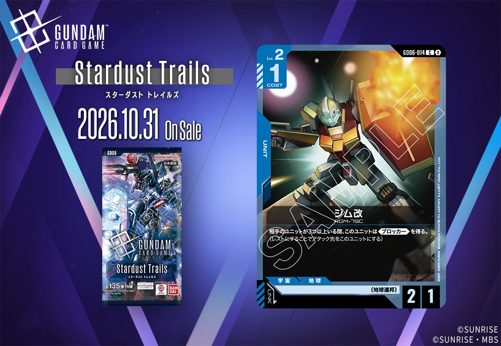

今回は拡張パック「Stardust Trails(スターダスト トレイルズ)」より、青のCOMMAND「前線復帰(GD06-103)」と、〔地球連邦〕のリンクを持つ青のUNIT「ジム改(GD06-014)」の2枚を紹介します。いずれも2026年10月31日発売です。

前線復帰 (GD06-103)
| 色 | 青 | タイプ | COMMAND |
| Lv | 3 | コスト | 1 |
| パイロット | サウス・バニング（補正 AP+2 / HP+0） 〔地球連邦〕、〔アルビオン隊〕 | ||
効果: メイン レストの相手のユニット1つを選ぶ。それに1ダメージを与える。
前線復帰(GD06-103)はCOST1のコマンドで、【メイン】レストの相手のユニット1つに1ダメージを与える軽量除去です。相手がレスト状態のユニットに限定されるため、アタック後や配備直後を狙う受動的な使い方になります。 同じくレストのユニットへ1ダメージを与えるガンタンク(GD01-008)の【配備時】と役割が重なり、低HPユニットの処理手段を厚くできます。2026-10-31発売、リンクはなし。

ジム改 (GD06-014)
| 色 | 青 | タイプ | UNIT |
| Lv | 2 | コスト | 1 |
| AP | 2 | HP | 1 |
| 特徴 | 〔地球連邦〕 | ||
| リンク条件 | 〔地球連邦〕 | ||
効果: 相手のユニットが3つ以上いる間、このユニットは《ブロッカー》を得る。(レストにすることでアタック先をこのユニットにする)
ジム改はCOST1でAP2/HP1の〔地球連邦〕ユニットで、相手のユニットが3つ以上いる間《ブロッカー》を得る点が特徴。相手が横並びに展開してくる局面でレスト運用の身代わりとして機能し、低コストで攻め手を受け止められる。 ただしHP1のため、ガンタンク(GD01-008)の【配備時】1ダメージのような効果や単発の除去で落ちやすく、《ブロッカー》成立には相手ユニット3つ以上という前提が必要な点は留意したい。2026-10-31発売、リンクは〔地球連邦〕。
関連カード
-
 アムロ・レイ(ST01-010)青系デッキ内採用率50.9% (2816デッキ)
アムロ・レイ(ST01-010)青系デッキ内採用率50.9% (2816デッキ) -
 覚悟の表れ(GD01-100)青系デッキ内採用率50.1% (2772デッキ)
覚悟の表れ(GD01-100)青系デッキ内採用率50.1% (2772デッキ) -
 ガンダム(ST01-001)青系デッキ内採用率49% (2712デッキ)
ガンダム(ST01-001)青系デッキ内採用率49% (2712デッキ) -
 ガンタンク(GD01-008)青系デッキ内採用率34.9% (1935デッキ)
ガンタンク(GD01-008)青系デッキ内採用率34.9% (1935デッキ) -
 コルシカ基地(ST02-016)青系デッキ内採用率34.6% (1918デッキ)
コルシカ基地(ST02-016)青系デッキ内採用率34.6% (1918デッキ) -
 アンクシャ(GD01-020)青系デッキ内採用率24.3% (1346デッキ)
アンクシャ(GD01-020)青系デッキ内採用率24.3% (1346デッキ) -
 ジム(ST01-005)青系デッキ内採用率23.2% (1284デッキ)
ジム(ST01-005)青系デッキ内採用率23.2% (1284デッキ)